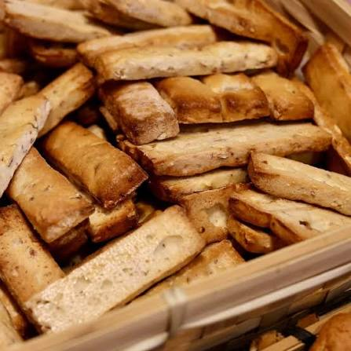

Croquants
VillaretUne maison nîmoise depuis 1775


⟹ Savoir-faire & Traditions ⟸
Nîmes à la veille de la Révolution. En 1775, sous le jeune règne de Louis XVI, Nîmes est une ville prospère, animée par le travail de la soie et des étoffes – c’est de ses ateliers que vient la fameuse « serge de Nîmes », ancêtre du denim. Dans les ruelles de l’Écusson, le centre historique, boulangers et pâtissiers approvisionnent une population nombreuse et commerçante.
Une boulangerie née sous Louis XVI. Cette année-là, Claude Villaret, ouvrier boulanger originaire de Lédignan, un village gardois situé entre Nîmes et Alès, rachète une boulangerie rue des Barquettes, l’actuelle rue de la Madeleine. Il y cuit du pain au levain dans un four à bois, mais aussi de petits gâteaux parfumés au citron et à la fleur d’oranger. Ce four d’origine a été conservé jusqu’à aujourd’hui : la maison compte parmi les plus anciennes boulangeries-biscuiteries de France encore en activité.
Né d’un problème de monnaie. L’histoire du croquant est liée à une anecdote devenue légende. À l’époque, un pain au lait coûte six liards, soit un sou et demi. La pièce d’un demi-sou n’existant pas, le boulanger ne peut rendre la monnaie au client qui paie avec deux sous. L’astucieux artisan imagine alors un petit biscuit sec qui sert de « monnaie » : pour deux sous, on reçoit un pain au lait… et un croquant. La tradition familiale situe plutôt l’invention sous son fils, Jules, au moment où l’État remplace les anciennes monnaies par le système décimal et ses centimes, dont le public se méfie : là encore, le croquant fait office d’appoint.

Le croquant, biscuit du Midi. Le croquant aux amandes appartient à une grande famille de biscuits secs méridionaux, conçus pour se conserver longtemps et accompagner un verre de vin cuit ou un café. Chaque ville du Midi possède sa propre recette. À Nîmes, il prend la forme d’un biscuit fin, allongé et doré, réputé pour sa dureté : il met les dents à rude épreuve et se trempe volontiers. Il n’est fabriqué qu’à Nîmes, dans la boutique de la rue de la Madeleine.
Une recette jalousement gardée. C’est Jules Villaret qui aurait mis au point la recette définitive du biscuit aux amandes parfumé au zeste de citron et à la fleur d’oranger. Les ingrédients sont simples – farine, sucre, amandes entières, arômes naturels et dorure à l’œuf – mais les proportions et le tour de main restent secrets. Aujourd’hui encore, seuls le chef boulanger et le chef pâtissier de la maison ont accès aux recettes, transmises par la famille Villaret lors de la cession du commerce.
« Croquanet » et l’envol du XIXe siècle. Paul Villaret, petit-fils du fondateur, surnommé « Croquanet », fait connaître le biscuit bien au-delà de son quartier. Il élargit la gamme avec des brioches appelées coques, des fougassettes, des caladons – biscuits au miel et aux amandes – et des minerves au glaçage d’amande, clin d’œil au passé romain de la ville. C’est à la fin du XIXe siècle que le croquant Villaret prend véritablement son envol et devient une référence nîmoise.
Un souvenir de Nîmes. Vendus dans leurs sachets et leurs boîtes caractéristiques, les croquants deviennent au fil du temps le cadeau traditionnel que l’on rapporte de Nîmes, au même titre que la brandade. Des générations de Nîmois en ont fait leur « madeleine de Proust », tandis que les guides touristiques attirent des visiteurs venus du monde entier, curieux de goûter ce biscuit singulier.
Une maison qui traverse les époques. Révolution, guerres, crises économiques et transformations du centre-ville n’ont pas eu raison de la boutique. Six générations de la famille Villaret se succèdent à sa tête. En 1987, la maison change de mains avec l’arrivée de Gabriel Recolin, qui préserve les spécialités ; sa fille Claudine lui donne ensuite un nouveau souffle. Aujourd’hui, la fratrie Brayde – Marion, Benoît et Rémi – dirige l’entreprise, qui compte une trentaine de collaborateurs contre cinq autrefois, et travaille à l’élaboration d’une farine entièrement locale.
Un fournil devenu salle de restaurant. Derrière la devanture verte et boisée du 13, rue de la Madeleine, la maison réunit désormais boulangerie, pâtisserie, restaurant et salon de thé. L’ancien fournil a été rénové autour du four à bois de 1775, remplacé pour la production par un modèle moderne mais conservé comme témoin de plus de deux siècles d’histoire. Dans la vitrine, les croquants côtoient nougats vendus à la tranche, minerves et caladons.
250 ans de douceurs nîmoises. Le 14 juin 2025, la maison Villaret a célébré ses 250 ans par une grande fête sur la place de l’Horloge, voisine de la boutique : boulangers et pâtissiers y ont préparé devant le public croquants, minerves, caladons et mignardises, proposés gratuitement à la dégustation. Un anniversaire qui confirme la place de la maison dans le patrimoine vivant et l’identité gourmande de la ville.